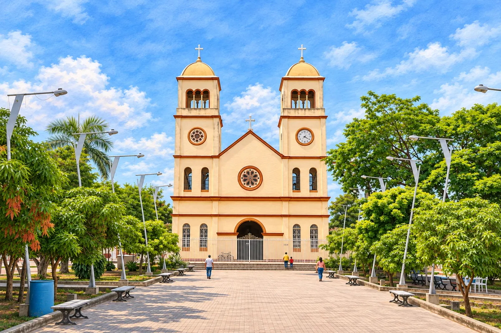

Arjona · torres completas
Imagen aprobada y actualizada en dev1.
Portada actual · torres cortadas
Nueva propuesta · torres completas

Fotos reales usadas como referencia
Foto frontal anterior
Foto lateral · cúpulas y cruces completas
 Nueva propuesta · torres completas
Nueva propuesta · torres completas Foto lateral · cúpulas y cruces completas
Foto lateral · cúpulas y cruces completas